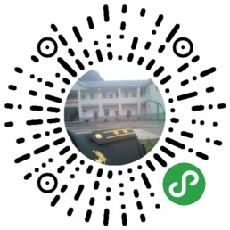
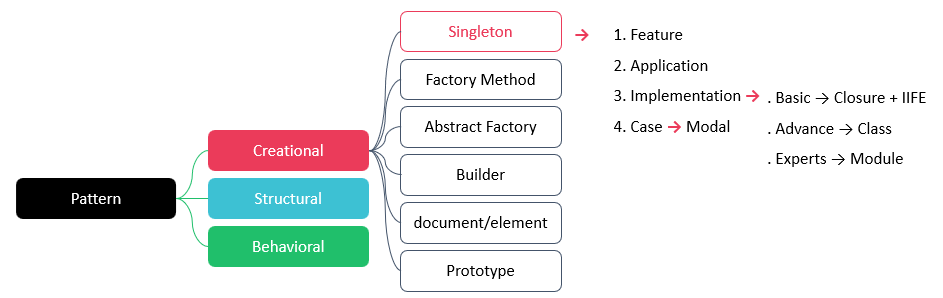

试讲
课程
×
试讲
课程
| 张树彬 | |
| 软件工程 | 数字媒体 | 物联网 | |
| 党员 | |
| 13*0**35481 | |
| 1942194789@qq.com | |
| 撸码 | 逛B站 | 运动 | 美食 | 绿植 |
I'm a passinate web developer and creative technologist with a keen eye form design and a loe for building innovative digital solutions. With expertise in both front-end and back-end development, I create seamless user experience that lear a lasting impression.
My approach combines technical excellenace with creative problem-solving to deliver projects that not only meet but also exceed expectations.
I have a strong understanding of the entire development process and can deliver high-quality results on time. I also have a passion for learning and staying up-to-date with the latest industry trends and technologies.
WEB

微信小程序
微信公众号
柯麦商城
邯郸中西医
软件工程
设计模式
单例模式
23软工1班
23软工2班
23软工3班
原理
特点
应用
实现
开发
运用
逻辑思维
计算思维
理论讲解
案例分析
项目实操
5 - 理论
10 - 实操
30 - 练习
听
思
撸


| 类 Class | 实例 Instance |
|---|---|
| 抽象、模板、蓝图 | 具体的对象 |
| class | new |
| 不直接存储具体数据 | 有自己独立的内存空间 |
| 是什么 | 类的具体表现 |
| 一份 | 多份 |
控制类的实例化过程，确保一个类在整个程序运行期间只存在一个实例
避免全局使用的类-频繁-的创建和销毁，占用和消耗系统资源
通过静态方法或属性，如 getInstance()，让所有模块都能访问这个唯一的实例
避免了直接使用全局变量带来的混乱和耦合问题
实例不是一开始就创建，而是在第一次被请求时才创建
加快首屏启动时间
节省系统资源
有，返回已经创建的实例
没有，创建实例
延长了变量的生命周期
实现数据私有化（类似私有变量），外部无法直接访问
可能导致内存泄漏（如果闭包引用了大对象且未释放）
声明
const outer = () => {
let age = 18;
return inner = () =>{
return age;
};
}
执行，拿到函数 inner()
outer()
再执行，访问到 age
outer()()
inner 函数形成了一个闭包，它-记住-了 outer 中的 age 变量
即使 outer() 已经执行完毕，age 依然存在，并被 inner 所引用
定义后立即被调用 - 简化操作
通常用于创建私有/独立作用域，使得其中的变量 instance 成为真正的私有静态变量
避免污染全局命名空间
;(() => {
// 函数体
})();
借助闭包和立即执行函数实现
const Singleton = (() => {
let instance;
return () => {
if (!instance) {
// ...
}
return instance;
};
})();
const singletonTime = (() => {
let timer;
return () => {
if (!timer) {
timer = new Date().getTime()
}
return timer
}
})()
let t0 = singletonTime()
console.log(t0);
setTimeout(() => {
let t1 = singletonTime()
console.log(t1);
console.log(t0 == t1);
console.log(t0 === t1);
}, 3000)
JavaScript 支持较好；低版本也可以正常使用
语法略显复杂，可读性不如类
返回的是函数，调用时是 Singleton()，不像构造函数 new Singleton() 直观
如果初始化逻辑复杂，代码组织不如类清晰
单例创建后，也可以直接使用开发者工具验证，并思考为什么t1会提示未定义？
在获取时间戳的逻辑中，定义自己需要的任何逻辑即可
在 constructor 中检查 Singleton.instance 是否存在
若存在，直接返回已有实例，跳过初始化
否则创建新实例并赋值给 Singleton.instance
定义
class Singleton {
constructor() {
if (!Singleton.instance) {
// ...
Singleton.instance = this;
}
return Singleton.instance;
}
// methods
// ...
}
验证
const instance1 = new Singleton(); const instance2 = new Singleton(); console.log(instance1 === instance2); // true
语法清晰，符合现代编码规范
调用方式自然：new Singleton()
易于扩展，支持继承
Singleton.instance 是暴露的，可能被外部修改或重置。如何避免？
利用 ES Module 的特性：模块是单例的，import 多次也只加载一次
直接导出一个实例，而不是类
天然单例：JS 模块系统保证了这一点
最简单、最安全：没有手动检查实例的逻辑
易于测试；可通过 mock 模块替换
无法延迟初始化 lazy initialization：模块加载时就创建实例，即使还没用到
如果初始化依赖运行时参数，如配置，会受限
不适合需要"按需创建"的场景
// singleton.js
class Singleton {
constructor() {
this.data = [];
}
getData() {
return this.data;
}
addData(item) {
this.data.push(item);
}
}
// 导出单例实例
export default new Singleton();
let Modal = (() => {
let instance = null
return () => {
if (!instance) {
instance = document.createElement('div')
instance.innerHTML = 'Modal'
document.body.appendChild(instance)
}
return instance
}
})()
// 打开
let open = document.querySelector('#open')
open.addEventListener('click', () => {
let singleton = Modal()
singleton.style.display = 'block'
})
// 关闭
let close = document.querySelector('#close')
close.addEventListener('click', () => {
let singleton = Modal()
singleton.style.display = 'none'
})
let Modal = (() => {
let instance = null
return (option={}) => {
if (!instance) {
instance = document.createElement('div')
instance.innerHTML = option.msg
document.body.appendChild(instance)
}
return instance
}
})()
let modal = Modal({ msg: 'hi,there.' })
class Modal {
constructor() {
if (!Modal.instance) {
this.element = document.createElement('div');
this.element.innerHTML = 'Modal';
document.body.appendChild(this.element);
Modal.instance = this;
}
return Modal.instance;
}
show() {
this.element.style.display = 'block';
}
hide() {
this.element.style.display = 'none';
}
}
const dialog1 = new Dialog(); const dialog2 = new Dialog(); console.log(dialog1 === dialog2); // true，同一个实例
btnOpen.addEventListener('click', () => {
const dialog = new Dialog();
dialog.show();
});
btnClose.addEventListener('click', () => {
const dialog = new Dialog();
dialog.hide();
});
import { defineStore } from 'pinia'
import { ref, computed } from 'vue'
export const useCounterStore = defineStore('counter', ()=>{
// state
const goods = ref([])
const good = ref({})
// action
// get all
const getAll = async () => { };
// get by id
const getById = async (id) => { };
// get by query
const getByQuery = async (query) => { };
return { goods, good, getAll, getById, getByQuery }
})
import { useCounterStore } from '@/stores/counter';
const store1 = useCounterStore();
const store2 = useCounterStore();
console.log(store1 == store2);
store1.getAll()
折叠菜单
路由导航
路由守卫
状态管理
import { useMenuStore } from '@/stores/menu'
router.beforeEach((to, from, next) => {
// 其它逻辑
const store = useMenuStore();
store.flag = false;
next();
})
router.afterEach((to, from) => {
// 其它逻辑
if (to.path === from.path) {
const store = useMenuStore()
store.flag = false
}
})
class Logger {
constructor() {
if (!Logger.instance) {
this.logs = [];
Logger.instance = this;
}
return Logger.instance;
}
log(message) { }
error(message) { }
getLogs() { }
}
const logger1 = new Logger();
const logger2 = new Logger();
logger1.log('User logged in');
logger2.error('Failed to load data');
console.log(logger1 === logger2); // true
| 方法 | 特点 |
|---|---|
| IIFE + Closure | |
| Class | |
| Module |